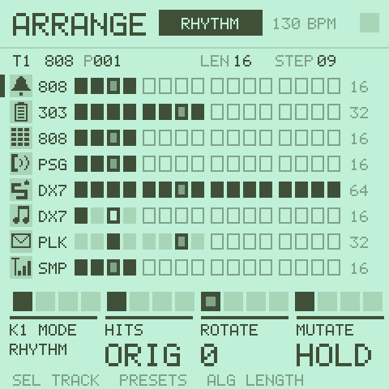
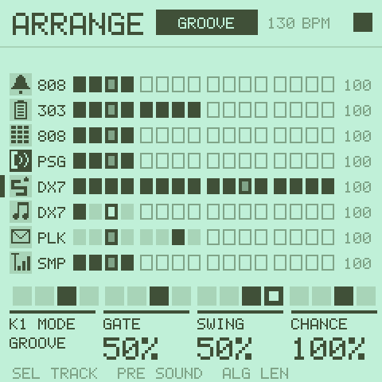
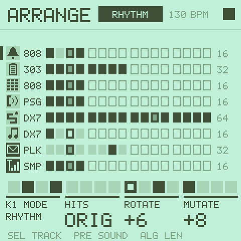

Eight tracks, eight symbols
Every track has its own phone symbol at the start of its ARRANGE row. It flips to inverse on every hit, so you see the groove move.
- 1 KICKBell · rings on every hit
- 2 RUMBLEBattery · fills with low end
- 3 HATSKeypad · ticks like key presses
- 4 PERCHandset · sends out sound waves
- 5 ACIDSnake · squiggles like a 303
- 6 PADNote · holds the chords
- 7 FXMessage · pings when it rises
- 8 NOISESignal · static at full bars
Four modes on one knob
Turn K1 on ARRANGE to change what K2 to K4 do. In USER you build your own map: hold EDIT, turn a knob, release to save. SELECT picks the track, PRESETS the sound, ALGORITHM the length.
- RHYTHMK2 HITS
K3 ROTATE
K4 MUTATE - GROOVEK2 GATE
K3 SWING
K4 CHANCE - SPACEK2 CUTOFF
K3 PUNCH
K4 THROW - USERK2 your pick
K3 your pick
K4 your pick
Menu
Screens from the real firmware, rendered by its own drawing code.





Install on your FM-1
Everything runs in the browser over USB-MIDI: no drivers, no apps. The original V15 firmware is built into the installer, so you can always go back.
EXPERIMENTAL. 3310 is new and has not been tested on many devices yet. Install at your own risk, back up first, and keep the FM-1 powered and connected until the installer says it is done.
The installer opens in this tab. Use desktop Chrome or Edge and a USB data cable.
Ready check
- …Firmware built and included
- …Browser supports Web MIDI
- …Page opened over https or localhost
- …Desktop computer, not a phone
This build
- FILE
- 3310.fwsc
- SIZE
- –
- BUILT
- –
- SHA-256
- –
Back up
Export the projects, voices and samples you want to keep. Close DAWs and other MIDI apps.
Connect
Switch the FM-1 on, plug in the USB cable, press START INSTALLER, then Connect device. Allow MIDI / SysEx.
First time from stock V15
The installer sees
FM-1_015. Click Enable force flash and reconnect. Nothing is written yet. Coming from FM1 Open? Skip this step.Install
Tick the backup box, click Force flash (or Install) and confirm. Do not unplug while it writes. The FM-1 restarts into the 3310 boot screen.
About
3310 is made by BULØKE, a hard techno artist building tools for long, hypnotic, machine-driven sets. The idea was simple: a pocket synth that thinks in tracks and loops instead of menus, where every knob does something you can hear on the dance floor.
Designed by BULØKE, with the code written together with Claude. Built on M-VAVE's FM1 Open and the work of the FM-1 community.